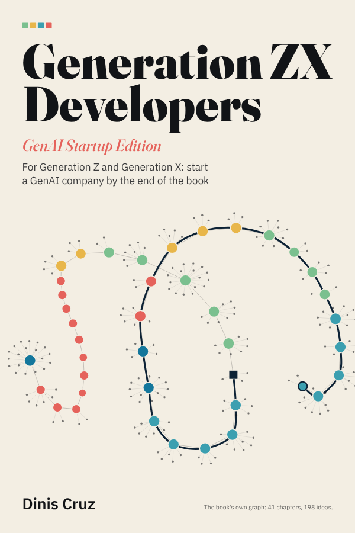
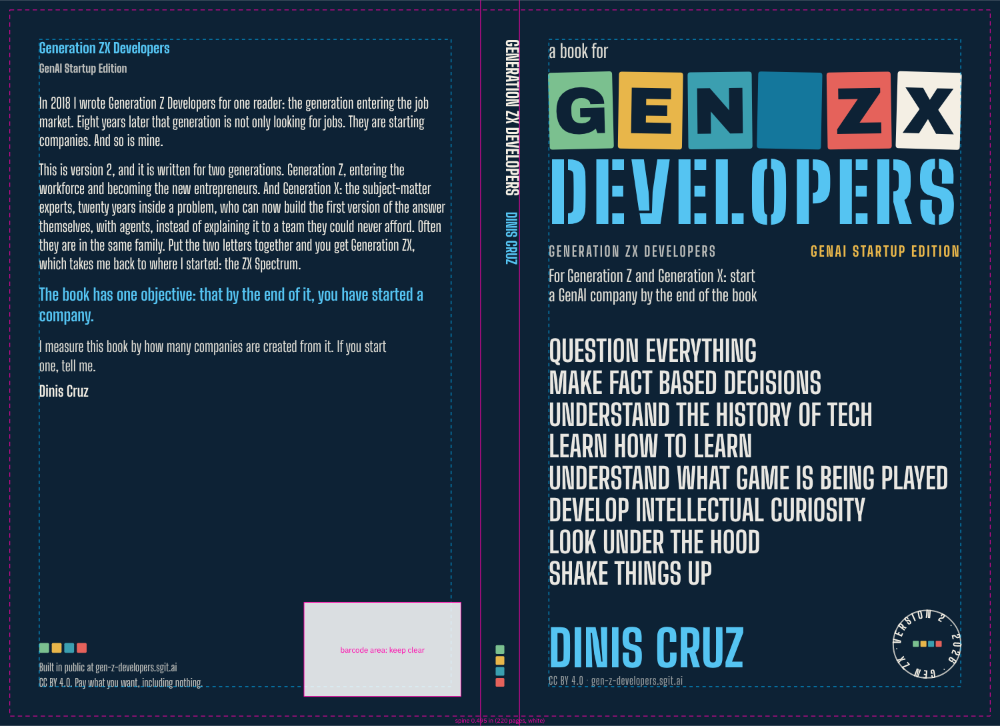
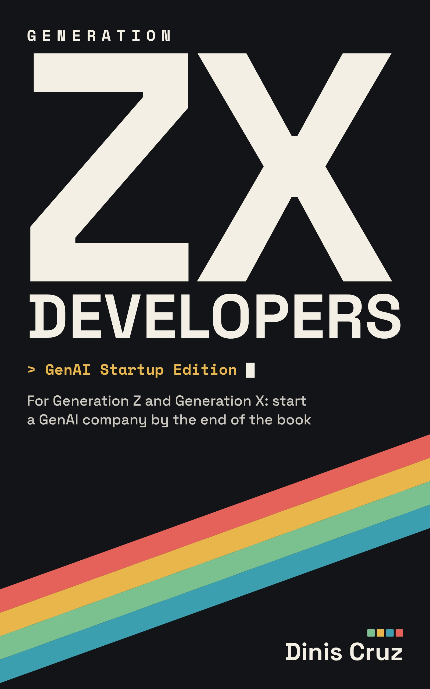
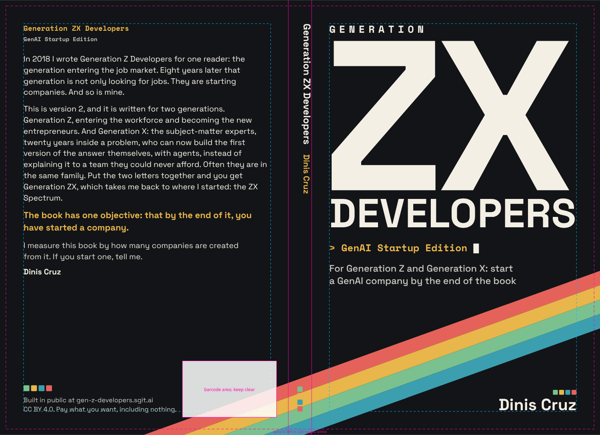
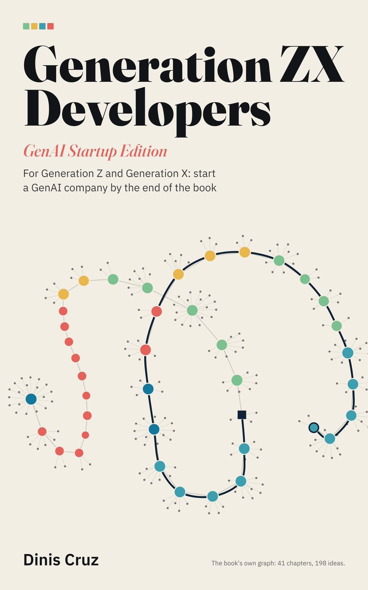
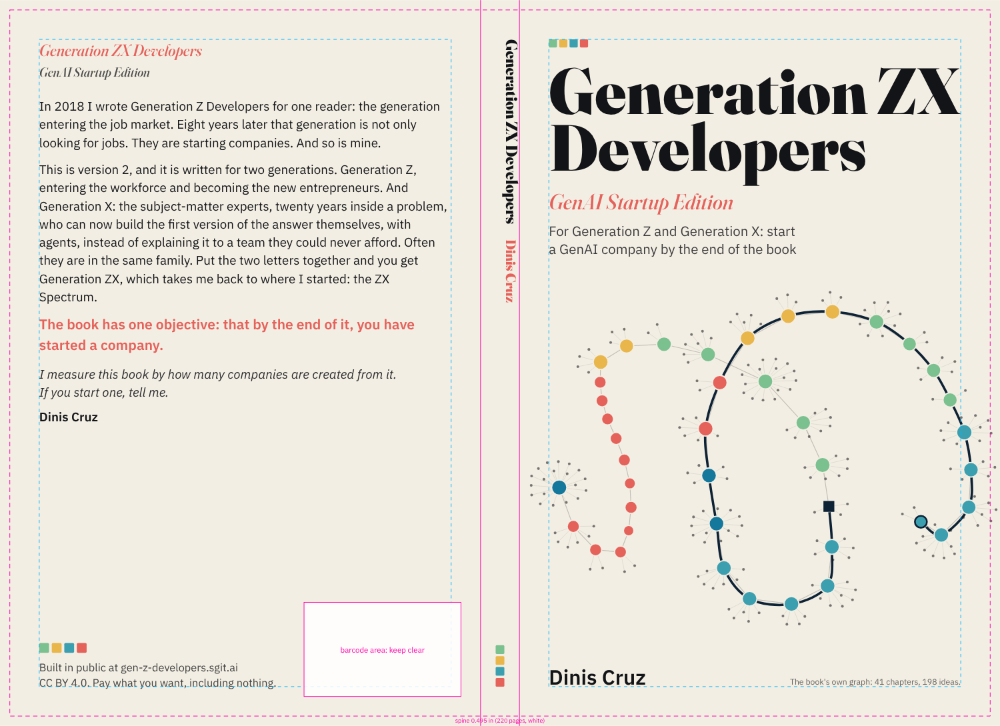

Covers
Three cover designs for Generation ZX Developers (GenAI Startup Edition), ready for Amazon and Leanpub, each drawn from data by code into SVG, so any of them can be resized, recoloured or reworded and drawn again. Proposals: the cover waits on Dinis (decision 004), and these are the options he asked for on 19 October 2026.
3designs3formats each0.495 inspine, 220 pages12.745 × 9.250inches, the wrap

The book as a graph1. One letter more

The 2018 cover, kept, with one letter added. Its blocks spelled GEN, a space, Z; now the space stays and an X joins after the Z, in ivory, the new letter. The eight 2018 lines stay: the home page says the second edition keeps all eight. For the reader of the first edition, it is the same book, grown.
Type: Archivo Black (display), Big Shoulders Display (condensed), Big Shoulders Stencil Display (stencil).
Risk. The cover spells GEN ZX, as 2018 spelled GEN Z; KDP checks that the cover's title matches the book's metadata, so the full title is on the cover too, smaller, and a stricter reading may want it larger.
Front, SVG Kindle JPG Leanpub JPG Paperback PDF Wrap, SVG


Kindle 1600 by 2560 (396 KB); Leanpub 1800 by 2700 (448 KB); paperback 12.745 by 9.250 inches (51 KB, fonts embedded); the SVGs carry their fonts, so they open and resize anywhere.
Kindle, laid out again for its taller shape

wrap.svg are the same without them.2. ZX

Generation ZX goes back to where Dinis started: the ZX Spectrum. A near-black ground, the two letters huge, a prompt with a cursor for the edition, and a band of four stripes in the 2018 cover's colours in the Spectrum's order, red, yellow, green and teal, rising across the corner. A homage, not a copy: no Sinclair name, logo or keyboard.
Type: Space Grotesk (display), Space Mono (mono).
Risk. The four-stripe band is associated with Sinclair's machines; worth a trade-mark look before print, and an easy change of angle or colour if it is a problem.
Front, SVG Kindle JPG Leanpub JPG Paperback PDF Wrap, SVG


Kindle 1600 by 2560 (218 KB); Leanpub 1800 by 2700 (244 KB); paperback 12.745 by 9.250 inches (36 KB, fonts embedded); the SVGs carry their fonts, so they open and resize anywhere.

Kindle, laid out again for its taller shape

wrap.svg are the same without them.3. The book as a graph

The book is built as a graph, and this cover is that graph: every chapter of the candidate as a node, coloured by its part and sized by its length, every idea it was written from as a point joined to it, and the path from the first chapter to the company drawn through it. Drawn from the book's own data on every run, so the cover of the next candidate is that candidate's graph.
Type: Fraunces (display), IBM Plex Sans (text).
Risk. The quietest of the three at thumbnail size; it relies on the title, and the graph reads as texture until the book is in the hand.
Front, SVG Kindle JPG Leanpub JPG Paperback PDF Wrap, SVG


Kindle 1600 by 2560 (255 KB); Leanpub 1800 by 2700 (290 KB); paperback 12.745 by 9.250 inches (146 KB, fonts embedded); the SVGs carry their fonts, so they open and resize anywhere.

Kindle, laid out again for its taller shape

wrap.svg are the same without them.The system
What every design shares, so that the choice between them is a choice of look, not of what the cover says or whether it prints.
The words
- Title: Generation ZX Developers (GenAI Startup Edition), as Dinis decided it (decision 014).
- Cover line: For Generation Z and Generation X: start a GenAI company by the end of the book: the subtitle proposed for Leanpub in article 17; decision 014 says the two generations are said in full on the cover line.
- Author: Dinis Cruz. Licence: CC BY 4.0. Where it is built: gen-z-developers.sgit.ai.
The hierarchy
- the title, Generation ZX (the two letters are the hook)
- Developers
- the edition, GenAI Startup Edition
- the cover line
- the author
The back
In 2018 I wrote Generation Z Developers for one reader: the generation entering the job market. Eight years later that generation is not only looking for jobs. They are starting companies. And so is mine.
This is version 2, and it is written for two generations. Generation Z, entering the workforce and becoming the new entrepreneurs. And Generation X: the subject-matter experts, twenty years inside a problem, who can now build the first version of the answer themselves, with agents, instead of explaining it to a team they could never afford. Often they are in the same family. Put the two letters together and you get Generation ZX, which takes me back to where I started: the ZX Spectrum.
The book has one objective: that by the end of it, you have started a company.
I measure this book by how many companies are created from it. If you start one, tell me.
Dinis's words, from the book's description in article 17; the build checks each one is there, word for word.
The formats
| For | What | Size |
|---|---|---|
| KDP paperback | KDP paperback, full wrap (back, spine, front) as one PDF | 6 × 9 in trim, 0.125 in bleed, spine 0.002252 in a page on white paper: 12.745 × 9.250 in |
| Kindle | Kindle eBook cover, JPEG, RGB | 1600 × 2560 px |
| Leanpub | Leanpub cover for a 6 by 9 inch book, as its help centre says | 1800 × 2700 px |
Assumed. The spine is computed from the final interior's page count; set it here and rerun. Decision 012 says 200 pages or more; KDP allows spine text from 80 pages. KDP's cover calculator and template for the final page count and paper, before upload: the spine width and barcode position here follow KDP's published rules as of October 2026 and are to be confirmed there.
The palette
navy #0d2235 ink #121417 paper #f3eee3 ivory #f4efe4 green #7bc08f yellow #e8b64a teal #3b9fb0 blue #14779c red #e5625b sky #55c4f2
The 2018 cover's colours, and the four-square mark that the site's infographics carry: four squares in the 2018 cover's colours, green, yellow, teal and red: the same mark the site's infographics carry.
The rules
- The title reads at a thumbnail: Amazon shows a cover at about 160 pixels tall, so the two letters ZX must survive that.
- Every word on the cover is the book's: the title from decision 014, the cover line from article 17, the back from article 17, checked word for word by the build.
- Nothing important within 0.375 inches of the trim; the bleed is background only.
- The barcode area on the back is kept clear; Amazon prints the barcode there.
- Black and white must still work for the spine and the interior title page: shape and type carry it, not colour alone.
- The guides (trim, bleed, safe area, spine, barcode) are a layer of their own, drawn on the review copies and never on the files that go to Amazon.
How to change a cover
- The words, the formats, the page count and the palette are in
admin/content/covers/covers.json; the layouts are functions of width and height inadmin/build/covers.py, one per design. - Run
python3 admin/build/covers.py: every SVG, the Kindle and Leanpub images and the print PDF are drawn again, with the text fitted from the fonts' own metrics. Then the site build, which checks the words. - When the interior is final, set its page count and paper and run it again: the spine and the wrap follow. Then compare with KDP's cover calculator before upload.
- The fonts are in
admin/content/covers/fonts/, each with its SIL Open Font License;admin/build/cover_fonts.pyfetched them from Google Fonts.